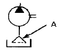

컨테이너크레인운전기능사 (2015-07-19 기출문제)
1과목: 임의 구분
1. 컨테이너 크레인의 작업 중 동시에 할 수 있는 동작은?
- 붐 호이스트, 호이스트
- 호이스트, 주행
- 트롤리, 호이스트
- 트롤리, 붐 호이스트
(정답률: 73%)

2. 컨테이너 크레인의 충격완화장치는?
- 타이다운(Tie down)
- 버퍼(Buffer)
- 붐 래치(Boom latch)
- 스프레더(Spreader)
(정답률: 80%)
3. 야드 트레일러에 대한 설명 중 틀린 것은?
- 트랙터와 섀시로 구분된다.
- 컨테이너 터미널 내부에서 사용된다.
- 도로주행용 육상 트레일러와 다른 장비로 구별된다.
- 랜딩기어(Landing gear) 장치가 부착되어 있다.
(정답률: 79%)
4. 컨테이너 크레인 운전실에 대한 제작조건과 가장 거리가 먼 것은?
- 운전실은 운전자가 화물을 용이하게 취급할 수 있도록 충분한 시야를 확보할 수 있어야 한다.
- 운전실 내의 컨트롤러, 각종스위치, 경보장치, 브레이크, 지시계, 모니터 및 경고판 등은 운전자가 쉽게 조작하거나 감지할 수 있도록 하여야 한다.
- 운전실 실내조도는 50룩스 이상이어야 한다.
- 운전자가 운전실 외부와 연락할 수 있는 전화 또는 방송섭리 등을 구비하여야 한다.
(정답률: 87%)
5. 컨테이너 크레인의 구조물이 아닌 것은?
- 붐(Boom)
- 트롤리 거더(Trolley girder)
- 오륜(Fifth wheel)
- 포탈 빔(Portal beam)
(정답률: 82%)
6. 와이어로프의 폐기기준을 설명한 것이 아닌 것은?
- 한 꼬임에서 소선의 수가 10% 이상 절단된 것
- 지름의 감소가 공칭지름의 3%를 초과한 것
- 킹크된 것
- 심하게 변형되거나 부식된 것
(정답률: 76%)
7. 컨테이너 크레인의 작업종료 후 취해야 할 사항과 거리가 먼 것은?
- 트롤리를 작동시켜 계류(parking) 위치에 정지시킨다.
- 레일 클래프의 제동상태를 확인한다.
- 스프레더의 변형 및 마모를 확인한다.
- 모든 제어 스위치를 ON 위치에 둔다.
(정답률: 82%)
8. 동력전달장치의 종류가 아닌 것은?
- 벨트
- 베어링
- 기어
- 체인
(정답률: 78%)
9. 와이어로프 꼬임의 종류에 해당하지 않는 것은?
- 보통 Z 꼬임
- 보통 S 꼬임
- 랭(Lang's) Z 꼬임
- 랭(Lang's) R 꼬임
(정답률: 74%)
10. 트롤리만을 와이어로프로 작동시키고, 호이스트 장치를 별도로 장치하는 방식은?
- 맨(Man) 트롤리
- 크랩(Crab) 트롤리
- 세미로프(Semi-rope) 트롤리
- 와이어로프(Wire rope) 트롤리
(정답률: 68%)
11. 컨테이너 크레인에 대한 설명으로 가장 적절한 것은?
- 아웃리치(Out reach)란 트롤리가 해상 측 레일에서 해상 측 정지 로타리 리미트 스위치까지의 거리를 말한다.
- 갠트리 오프닝(Gantry opening)이란 스프레더가 화물창 내로 최대한 내려갈 수 있는 거리를 말한다.
- 스팬(Span)이란 해상 측 레일중심에서 붐 끝단까지의 거리를 말한다.
- 백리치(Back reach)란 해상 측 레일 중심에서 육상 측 레일 중심까지의 거리를 말한다.
(정답률: 68%)
12. 브레이크의 작용이 아닌 것은?
- 운동 에너지를 흡수한다.
- 운동 에너지를 방출한다.
- 운동 속도를 감소시킨다.
- 운동 속도를 정지시킨다.
(정답률: 83%)
13. 컨테이너 크레인의 붐 호이스트 장치가 작동 되지 않을 경우 확인해야 할 사항과 가장 거리가 먼 것은?
- 붐 래치 핀(Latch pin)이 훅(Hook)에서 걸려 있는지 확인한다.
- 붐 와이어로프가 활차에서 탈선되어 있는지 확인한다.
- 트롤리가 주차(정지)위치에 있는지 확인한다.
- 레일 클램프가 잠겨있는지 확인한다.
(정답률: 70%)
14. 신호방법 중 오른손으로 왼쪽을 감싸 2~3회 작게 흔드는 수신호의 의미는?
- 기다려라
- 신호불명
- 작업완료
- 주권사용
(정답률: 74%)
15. 철도운송 하역을 위해 열차 위에 컨테이너를 하역하는 장비는?
- RMQC(Rail mounted quayside crane)
- BTC(Bridge type crane)
- LSTC(Long span type crane)
- RMGC(Rail mounted gantry crane)
(정답률: 71%)
16. 하나의 전기회로에 자력선의 변화가 생겼을 때 그 변화를 방해하려고 다른 전기회로에 기전력을 발생되는 현상은?
- 전류 유도 작용
- 저항 유도 작용
- 상호 유도 작용
- 자기 유도 작용
(정답률: 56%)
17. 극수가 8, 전압이 교류 440V, 주파수가 60Hz인 전원을 사용하는 유도전동기의 동기속도는?
- 300 rpm
- 600 rpm
- 900 rpm
- 1800 rpm
(정답률: 71%)
18. 컨테이너 크레인에서 트롤리의 위치제어(거리측정)는 무엇에 의해 실행되는가?
- 모터에 설치된 가감산 부호기(Encoder)에 의해
- 트롤리 와이어 드럼에 부착된 리밋 스위치(Limit Switch)에 의해
- 감속기어에 설치된 회전수 카운터(Revolution Counter)에 의해
- 와이어 드럼에 부착된 광전소자(Photoelectric Element)에 의해
(정답률: 63%)
19. 컨테이너크레인의 모니터링 시스템에 대한 설명으로 가장 거리가 먼 것은?
- 각각의 위치에 설치되 장치와의 통신상황을 알 수 있다.
- 기계실 등에 설치되 전동기의 전압 값과 전류 값을 알 수 있다.
- 전기실, 운전실 및 주행부 등에 설치된 PLC 상태를 알 수 있다.
- 속도제어기의 제어방법을 알 수 있다.
(정답률: 70%)
20. 브레이크용 전자석에서 전압강하가 많은 경우 발생하는 현상으로 옳은 것은?
- 접지저항이 높아진다.
- 충격이 발생한다.
- 작동시가이 빨라진다.
- 과열이 발생한다.
(정답률: 76%)
2과목: 임의 구분
21. 컨테이너크레인의 스프레더 유압펌프가 정지되는 경우는?
- 오일의 양이 부족했을 때
- 릴리프 밸브가 작동하였을 때
- 플리퍼가 모두 상승하였을 때
- 제어 전원이 오프(Off) 되었을 때
(정답률: 77%)
22. 컨테이너의 총중량 및 편하중을 측정하는 장치는?
- 풍향풍속제(Anemometer)
- 붐 랫치(Boom latch)
- 로드 게이지(Load guage)
- 앤티 스내그(Anti-snag)
(정답률: 81%)
23. 컨테이너크레인 운전 중 야드 트랙터의 섀시가 틀어져 있으면 어떻게 조정해야 하는가?
- 트림을 조정하여 맞춘다.
- 리스트를 조정하여 맞춘다.
- 스큐를 조정하여 맞춘다.
- 전체를 조정하여 맞춘다.
(정답률: 65%)
24. 지름 1m의 트롤리 와이어 드럼이 2회전할 때, 트롤리의 이동거리는?(오류 신고가 접수된 문제입니다. 반드시 정답과 해설을 확인하시기 바랍니다.)
- 약 1.0m
- 약 3.14m
- 약 4.0m
- 약 6.28m
(정답률: 62%)
25. 컨테이너크레인의 계류장치와 관련이 없는 것은?
- 앵커(Anchor)
- 턴버클(Turnbuckle)
- 트롤리(Trolley)
- 레일 클램프(Rail clamp)
(정답률: 62%)
26. 컨테이너크레인의 트롤리 및 호이스트 동작 시 구간 내에 들어왔을 때 위치를 확인해주는 스위치는(Swich)?
- 토글(Toggle)
- 누름(Push)
- 리밋(Limit)
- 로터리(Rotary)
(정답률: 67%)
27. 시퀀스 제어에서 각 응용회로에 대한 설명으로 틀린 것은?
- 자기 유지 회로 : 릴레이 자신의 접점에 의하여 동작 회로를 구성하고 스스로 동작을 유지하는 회로
- 인터록 회로 : 2개의 입력 중에서 먼저 동작한 쪽이 우선이고 다른 쪽은 나중에 동작하는 회로
- 시간 지연 회로 : 입력 신호를 준 후에 설정된 시간만큼 늦게 출력이 변화하도록 설계된 회로
- 일치 회로 : 2개의 상태가 같을 때에만 출력이 나타나는 회로
(정답률: 70%)
28. 컨테이너크레인의 붐 호이스트(Boom hoist) 운전 중, 상승초과(Upper overun) 리밋 스위치가 작동했을 때 나타나는 현상으로 옳은 것은?
- 붐이 즉시 하강한다.
- 붐이 일시 정지한 후 하강한다.
- 붐이 일시 정지한 후 상승한다.
- 붐은 비상 정지되고, 제어전원이 차단된다.
(정답률: 73%)
29. PLC(Programmable Logic Controller)의 주요 구성요소가 아닌 것은?
- 중앙처리장치
- 아날로그/디지털 신호변환장치
- 입·출력 모듈
- 유압 모듈
(정답률: 73%)
30. 전기에서 두 점 사이의 전위차란?
- 단위시간에 전기량이 일하는 일의 양
- 단위시간에 흐르는 전기량
- 두 점 사이에 작용한 전기적임 힘
- 두 점 사이에 전기적 위치에너지
(정답률: 70%)
31. 수출화물(Outbound) 컨테이너의 업무흐름은?
- 인수→보관→선적
- 인수→선적→보관
- 양화→보관→발송
- 양화→발송→보관
(정답률: 75%)
32. 컨테이너의 반입절차에 앞서 야드 내 적화 장치장 할당 시 고려해야 할 사항으로 틀린 것은?
- 장치상 할당 시 POD, SIZE, F/M 등 각각의 속성에 따른 분할적재가 필요하다.
- 냉동컨테이너인 경우에 온도 기입분에 대해서는 냉동 블록에 적재한다.
- 20피트 컨테이너는 장치당 끝단에 장치를 하지 않는 것이 좋다.
- 위험물 컨테이너는 최초 위험물 목록을 접수 후 IMDG, 1,2,7류(소방법상 8류)를 포함하여 위험물 담당자가 소방법에 맞추어 코드입력 후 위험물 블록에 적재한다.
(정답률: 59%)
33. 컨테이너 종류를 설명한 것으로 틀린 것은?
- 건화물 컨테이너 : 온도조절이 필요 없는 일반잡화를 운송하기 위한 컨테이너이다.
- 천정개방형 컨테이너 : 지붕과 측벽의 상부가 개방되어 있어서 상부로부터 하역이 가능한 컨테이너이다.
- 리퍼 컨테이너 : 승용차, 기계류 등과 같은 중량화물을 운송하기 위한 컨테이너이다.
- 탱크 컨테이너 : 유류, 술, 화학품 등과 같은 액체상태의 화물을 운송하기 위한 컨테이너이다.
(정답률: 76%)
34. 컨테이너에서 컨테이너 일련번호가 부착되지 않는 곳은?
- 옆면
- 윗면
- 밑면
- 앞면(Door 반대쪽)
(정답률: 79%)
35. Hub Port(중심항)의 전략적 가치 결정요소를 설명한 것으로 틀린 것은?
- 기간항로의 편입성, 연계운송의 지리적 접근성, 화물이동 방향의 수용성 및 자연적 안정성 등은 중요한 전략적 가치 결정요소이다.
- 대형선박의 수용성(수심, 안벽길이)과 연계운송시설(도로, 철도, 해상) 및 항만 면적/하역시설 등으로 전략적 가치를 결정한다.
- 항만운영제도(작업시간, 화물장치 허용기간) 등의 서비스 질과 항만서비스 가격 및 비용이 주요 요소이다.
- 정보통제와 정치, 사회, 경제적 안정성이 가장 중요하며, 해운환경의 변화와 국제 해운관행 등은 전략적 가치 결정대상이 아니다.
(정답률: 72%)
36. 선박 하역작업 중 컨테이너크레인 운전기사가 주의해야 할 선박의 구조물과 가장 거리가 먼 것은?
- 셀 가이드(Cell Guide)
- 레이더 마스트(Radar Mast)
- 갱웨이(Gangway)
- 타(Rudder)
(정답률: 68%)
37. 컨테이너 터미널의 시설에 포함되지 않는 것은?
- 에이프런(Apron)
- 통제실(Control Center)
- 컨테이너 화물 조작장(CFS)
- ODCY(Off-Dock Container Yard)
(정답률: 71%)
38. 컨테이너 터미널에서 에이프런(apron)과 야드(CY) 사이의 부두이송작업과 관련된 장비가 아닌 것은?
- 스트래들 캐리어(Straddle Carrier)
- 모바일 크레인(Mobile Crane)
- 야드 트랙터(Yard Tractor)
- 야드 트레일러(Yard Trailer)
(정답률: 72%)
39. 스프레더의 작동상태를 표시해주는 스프레더 표시 램프로 확인할 수 없는 사항은?
- 스프레더 착상(Spreader landed)
- 트위스트 콘의 록 또는 언록(Lock 또는 Unlock)
- 스프레더의 신축(Telescopic)
- 플리퍼의 상승 또는 하강
(정답률: 64%)
40. 컨테이너의 라싱방법 중 갑판적 컨테이너의 가장 상단에 적재한 컨테이너끼리 단단히 체결하는 방법은?
- 브리지 피팅(Bridge Fitting)
- 코너 피팅(Coner Fitting)
- 중간 스태킹
- 코너 가이드(Coner Guides)
(정답률: 59%)
3과목: 임의 구분
41. CY 작업 시 2단 컨테이너 위에 올라갈 때 안전도가 가장 낮은 방법은?
- A형 안전 사다리
- 사이먼 호이스트
- 이동용 플랫홈
- 타워와 조립식 플랫홈
(정답률: 70%)
42. 전기담당 정비요원의 작업시 주의사항으로 틀린 것은?
- 고압 전기배전반 등은 관계자 이외에는 조작하지 않는다.
- 전기시설물의 수리시에는 스위치를 차단하고 조작금지 표지판을 반드시 부착해야 한다.
- 작업 전 접지상태를 확인하고 방호조치를 취한다.
- 장비의 리미트 스위치를 편의에 따라 해제하며 작업완료 후 원위치로 복구한다.
(정답률: 70%)
43. 컨테이너 터미널에서의 안전 복장과 보호구에 대한 설명으로 옳지 않은 것은?
- 작업원이 있는 곳이 쉽고 분명하게 눈에 띌 수 있도록 하기 위해 저시도 재킷을 착용해야 한다.
- 안전모는 라싱맨에 의해 라싱 도구가 떨어지는 경우가 있으므로 턱 끈이 달린 견고한 안전모를 착용해야 한다.
- 부식성 분말이나 용액을 다룰 필요가 있다면 두꺼운 고무나 플라스틱 장갑을 착용해야 한다.
- 안전화는 강철로 된 앞발 끝 덮개와 미끄럼 방지 바닥으로 된 안전화를 착용해야 한다.
(정답률: 68%)
44. 위험화물 하역시의 일반적인 주의사항에 대한 설명으로 옳은 것은?
- 위험물을 적재작업 시 주간에는 D기를 게양하고, 야간에는 적색 전주 등을 켠다.
- 화약류 화물은 타 화물에 우선하여 양화하고, 마지막에 선적한다.
- 선정 및 관할지역 경찰청장은 긴급조치반이 접근할 수 있도록 도로 및 접근로를 확보한다.
- 선장은 선원안전교육, 화주는 하역작업원에 대한 안전교육을 실시한다.
(정답률: 67%)
45. 레일클램프(Rail clamp)의 작동형식에 따른 분류에 해당되지 않는 것은?
- 휠브레이크 형식
- 레일클램핑 형식
- 휠쵸크 형식
- 레일리프트 형식
(정답률: 68%)
46. 컨테이너 크레인의 가동 전 점검사항에 해당되지 않는 것은?
- 크레인 주요부위의 비파괴 검사
- 윤활 상태 점검
- 와이어로프 점검
- 각종 스위치 점검
(정답률: 78%)
47. 컨테이너 터미널에서 터미널 방문자에 대한 출입안전교육 내용으로 틀린 것은?
- 출입자에게 출입루트가 표시된 터미널 계획을 알려준다.
- 컨테이너 운반장비의 빠른 이동에 따른 위험을 경고한다.
- 단체 방문자들은 도보로 이동하게 한다.
- 출입금지 구역에 대한 엄격한 조치를 경고한다.
(정답률: 79%)
48. 컨테이너선 하역작업 중 조도(照度)에 관한 설명으로 틀린 것은?
- 조도는 하나의 표본지역에서 측정한다.
- 대부분의 출입지역은 평균 5룩스 이상의 조도가 요구된다.
- 작업지역은 평균조도가 최소 20룩스 이상이 되어야 하고 5룩스 미만 지역은 없어야 한다.
- 부두에서 선박으로 오르내리는 지역은 터미널의 평균조도보다 높은 20룩스 이상이 되어야 한다.
(정답률: 62%)
49. 비상시에 사용되어지는 장비는 필요시 신뢰할 수 있도록 정기적으로 점검, 검사 및 보수 되어야 하는데 이러한 비상장비에 포함되지 않는 것은?
- 앰블런스
- 소화호스
- 비상시 의사전달 체계(경보기, 워키토키, 전화 등)
- 소화기
(정답률: 82%)
50. 컨테이너 크레인을 가동 후 제 위치에 고정시키기 위한 방법 중 틀린 것은?
- 붐을 올리고 래치의 해지를 확인한다.
- 레일 클램프의 제동상태를 확인한다.
- 스토웨지 핀을 잠근다.
- 트롤리를 정지 위치에 정지시킨다.
(정답률: 54%)
51. 릴리프 밸브에서 볼이 밸브의 시트를 때려 소음을 발생시키는 현상은?
- 채터링(chattering) 현상
- 베이퍼 록(vaper lock) 현상
- 페이드(fade) 현상
- 노킹(knocking) 현상
(정답률: 61%)
52. 유압모터의 특징 중 거리가 가장 먼 것은?
- 소형으로 강력한 힘을 낼 수 있다.
- 과부하에 대해 안전하다.
- 정·역회전 변화가 불가능하다.
- 무단변속이 용이하다.
(정답률: 64%)
53. 그림의 유압기호에서 “A”부분이 나타내는 것은?

- 오일 냉각기
- 스트레이너
- 가변용량 유압펌프
- 가변용량 유압모터
(정답률: 67%)
54. 유압장치에 사용되고 있는 제어밸브가 아닌 것은?
- 방향제어밸브
- 유량제어밸브
- 스프링제어밸브
- 압력제어밸브
(정답률: 68%)
55. 회로 내 유체의 흐름 방향을 제어하는데 사용되는 밸브는?
- 교축 밸브
- 셔틀 밸브
- 감압 밸브
- 순차 밸브
(정답률: 62%)
56. 유압 실린더의 종류에 해당하지 않는 것은?
- 단동 실린더
- 복동 실린더
- 다단 실린더
- 회전 실린더
(정답률: 68%)
57. 유압 작동유의 점도가 너무 높을 때 발생되는 현상은?
- 동력손실 증가
- 내부누설 증가
- 펌프효율 증가
- 내부마찰 감소
(정답률: 61%)
58. 기어식 유압펌프의 특징이 아닌 것은?
- 구조가 간단하다.
- 유압 작동유의 오염에 비교적 강한 편이다.
- 플런저 펌프에 비해 효율이 떨어진다.
- 가변 용량형 펌프로 적당하다.
(정답률: 41%)
59. 유압장치의 오일탱크에서 펌프 흡입구의 설치에 대한 설명으로 틀린 것은?
- 펌프 흡입구는 반드시 탱크 가장 밑면에 설치한다.
- 펌프 흡입구는 스트레이너(오일 여과기)를 설치한다.
- 펌프 흡입구와 탱크로의 귀환구(복귀구) 사이에는 격리판(baffle plate)을 설치한다.
- 펌프 흡입구는 탱크로의 귀환구(복귀구)로부터 될 수 있는 한 멀리 떨어진 위치에 설치한다.
(정답률: 66%)
60. 오일의 압력이 낮아지는 원인과 가장 거리가 먼 것은?
- 유압펌프의 성능이 불량할 때
- 오일의 점도가 높아졌을 때
- 오일의 점도가 낮아졌을 때
- 계통 내에서 누설이 있을 때
(정답률: 60%)
따라서, 컨테이너 크레인의 작업 중 동시에 할 수 있는 동작은 트롤리와 호이스트입니다. 붐 호이스트는 붐과 호이스트가 함께 작동해야 하므로 동시에 할 수 없습니다. 호이스트와 주행은 호이스트가 화물을 들어올리는 동안에도 주행이 가능하지만, 동시에 할 수 있는 동작은 아닙니다. 마지막으로, 트롤리와 붐 호이스트는 트롤리가 붐 위를 이동하면서 화물을 운반하는 역할을 하므로, 동시에 할 수 있습니다.